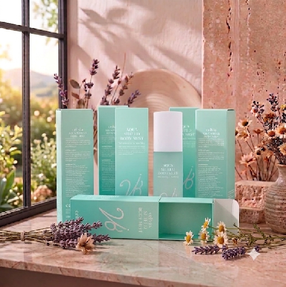

SECRET CERAMIDE RECIPE
なめらかで潤う素肌へ。
アクアシールド の力。
乾燥しがちなボディに、隙のない潤いレイヤリングを。贅沢なボディミストが誕生しました。
保水
Moisture
整肌
Soothing
栄養
Nutrition
厳選された6つのキー成分
肌のバリア機能をサポートし、豊かな潤いを与えるために科学的なアプローチで選ばれた成分です。タップして詳細をご確認ください。
01
ヒト幹細胞順化培養液
02
液晶構造セラミド
03
発酵エキス複合体
04
4種ヒアルロン酸
05
プロバイオティクス
06
よもぎ抽出成分
トータルボディケアの黄金比
潤いを与えるだけでは不十分です。Cellviaのボディミストは、成分の相乗効果により、保湿、鎮静、栄養、肌バリア、キメの5つの要素を完璧なバランスで整えます。
長時間保水持続力
肌馴染みの良さ
使用後のリフレッシュ感
※成分特性および使用感に関するイメージ指標です
How To Use
お風呂上がりの習慣に。3つのステップで理想のボディへ。
1
SHAKE IT
成分を均一に混ぜるため、使用前に容器を軽く振ってください。
2
SPRAY
肌から約20cm離し、円を描くように全身にスプレーします。
3
ABSORB
手のひらでハンドプレスし、成分をしっかりと肌に届けます。
💧
Beauty Tip
タオルドライ後、肌がまだ少ししっとりしている状態で使用すると、保水レイヤリング効果がさらに高まり、なめらかな肌触りが持続します。